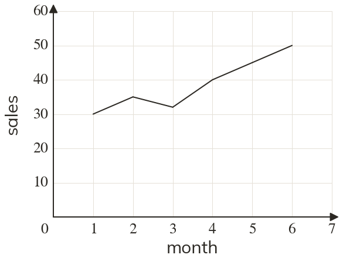

Westonbirt Maths · Distance-Time and Conversion Graphs
Conversion and Time-Series Graphs
Name: ______________________ Date: ____________
1
The graph shows a shop's sales (items) each month. Describe the trend.
2
In question between which two months did sales rise the most?
3
Rainfall in five months was mm, mm, mm, mm and mm. Describe the trend.
4
A time-series graph joins °C at 09:00 to °C at 12:00
Estimate the temperature at 10:00, and say why it is only an estimate.
Estimate the temperature at 10:00, and say why it is only an estimate.
5
A museum had visitors a day in in in and in
Describe the trend.
Describe the trend.
Ext
Leo uses question 1's graph to predict sales of in month
Is this reasonable?
Is this reasonable?
